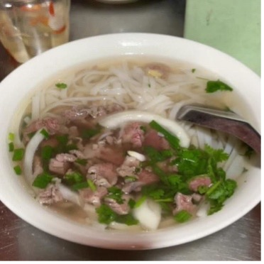
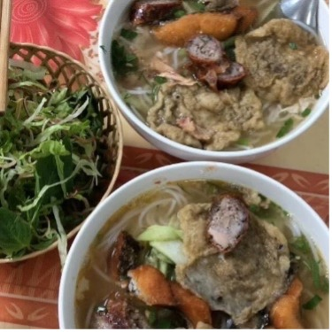
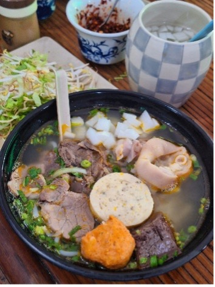
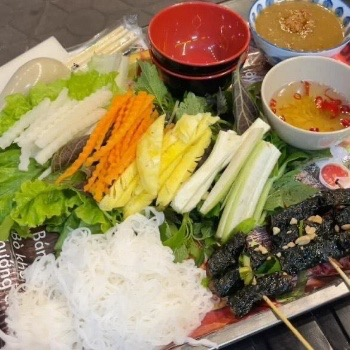
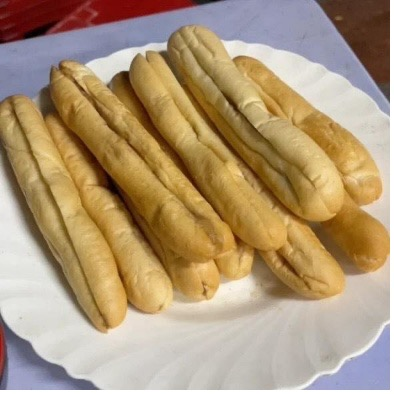
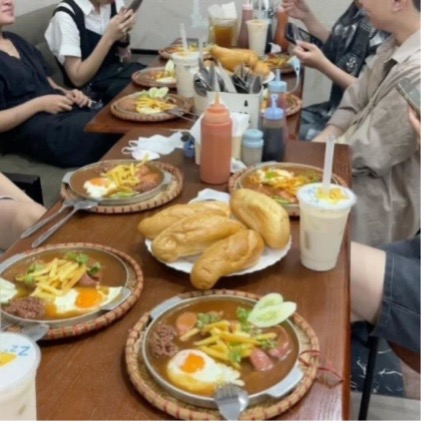
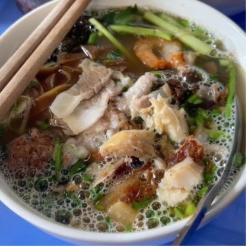
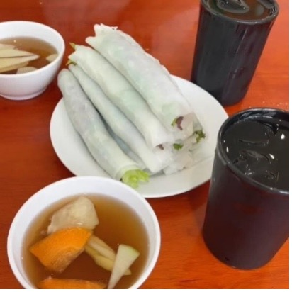
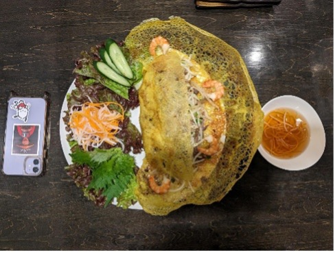
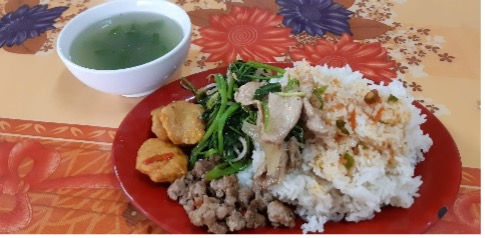

ベトナム食文化 ベトナム人留学生から聞いたベトナム料理まとめ
八島優花
ベトナムの留学生2人から聞いたベトナムおすすめ料理を紹介します！ベトナム料理は比較的安価で、一食200～300円の料理が多い！過去にベトナム研修に参加した学生が選んだ、「ベトナム料理おすすめランキング！」もあるので、是非参考にしてみてください！
留学生に聞いたおすすめ料理
○フォー（phở）
○ブンカーカイ（Bún Cá Cay）
◎ブンカーとブンカーカイの違い◎
風味や調理法が違う！ブンカーはさっぱりした味わいで万人向け！ブンカーカイは辛くてパンチのある味が好きな人におすすめ！
○ブンボーフエ（bún bò Huế）
○ブンチャー（Bún chả）
〇バインミー（bánh mì）
バインミーカイ
バインミーチャオ
〇バインダークァ（Bánh đa cua）
〇ゴイクン（Gỏi Cuốn）
〇バインセオ（Bánh Xèo）
〇コム (cóm)
過去の参加者が選ぶ「ベトナム料理おすすめランキング！」（８人の回答）
１位 ブンチャー（Bún chả ）
- 「酸味のあるつゆにつけて食べるのが最高！！」
- 「あっさりで食べやすかった。」
- 「ハノイとハイフォンそれぞれの味を楽しめた。（ハノイの方が濃い）」
- 「一緒に食べた揚げ春巻きもおいしかった。」
- 「食べられないものがなかった。（野菜類は自分で選んでとれた。フォーは苦手な内臓系？が入っていたりしたので…。）」
- 「ベトナムらしい味(日本にはない味)なのに、食べやすかった。」
- 「日本にいても食べたくなるので、たまにベトナム料理屋さんに行って食べています。」
２位 フォー（phở）
- 「寒い日には温かいフォーが染みて美味しかったです。優しい味が良かったです。」
- 「日本でインスタントのものを食べたことがあったけど、全然違うし、ベトナムで食べた方が美味しかった。」
- 「特に鶏肉を丸々焼いて提供するまで見られるお店があって凄かった。」
３位 バインミー（bánh mì）、バインダークァ（Bánh đa cua）、コム (cóm)
バインミー⇒「パンもお肉も分厚く食べ応え抜群！店によってはパクチーが入っていないものやチーズが入っているものあったため日本人でも食べやすい！また食べたいですね！」
バインダークァ⇒「平麺が美味しい！魚介も具として沢山入っていて、初めてシャコを食べたけど、食べやすかった！」
コム⇒「ご飯のおかずを自分で選べるのがよかった！価格帯3万5000ドン〜（約206 円(2024.12.3現在））」
現地人に聞いたベトナム料理のおすすめ店リスト！